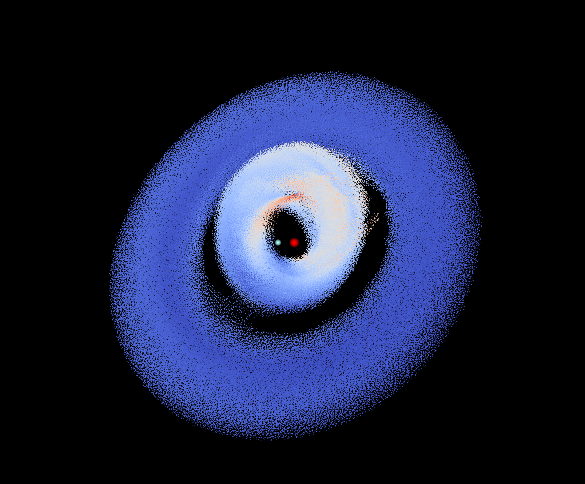

Misaligned circumbinary discs around unequal-mass eccentric binaries: alignment, morphology, and binary accretion variability
Apr 15, 2026
We show that, circumbinary accretion might serve as a potential observational diagnostic for binary-disc misalignment, and has implications for circumbinary planets formation.